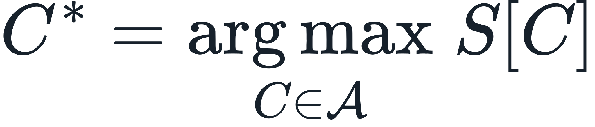
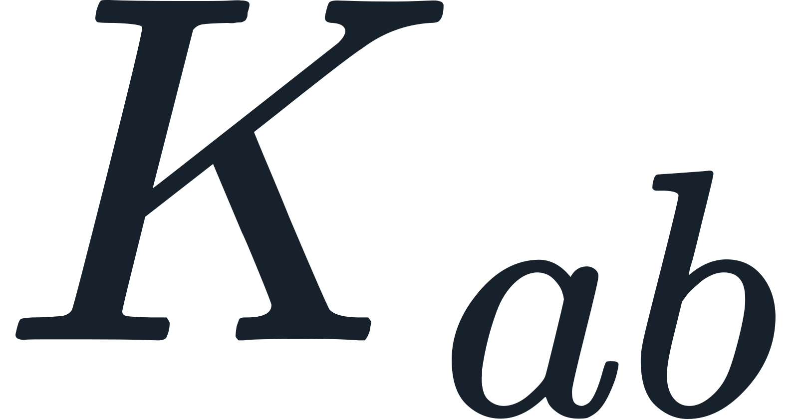
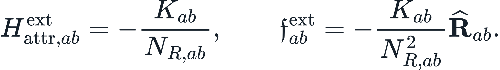
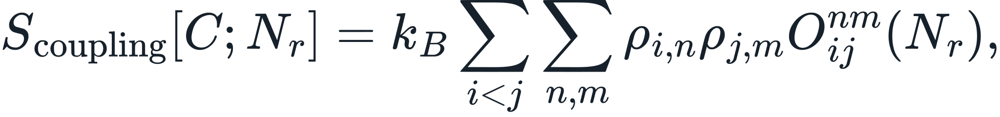
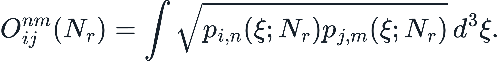
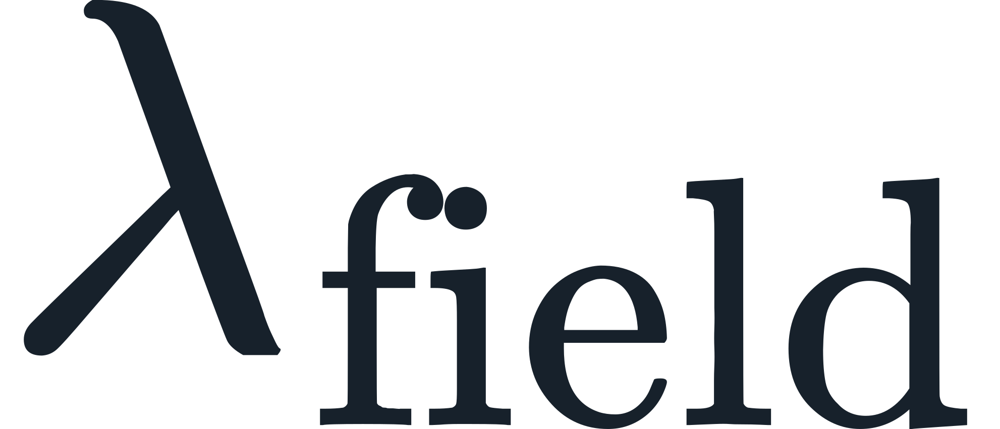
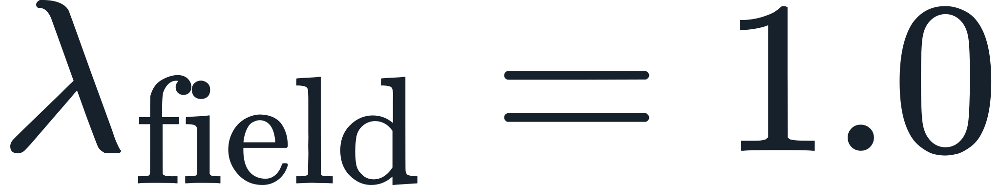
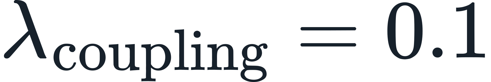
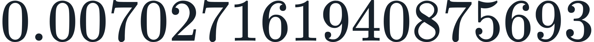

Continuum Paradigm: Problem-Solving Correspondence
What kind of problem does the Continuum Paradigm address?
The Continuum Paradigm is a complete-state structural framework for examining how one continuous reality produces observable structures across physical, biological, informational, and measurement domains. It asks whether some divisions between familiar laws arise because downstream projections were treated as foundational before the complete structural state was resolved.
This is a structural and evaluative proposal with explicit certification boundaries. It does not claim that every question in every covered field has been solved.
How does the framework select a realized structural state?
It applies the same complete-state selection rule across its declared domains:

Here,  is the admissible set of complete structural candidates and
is the admissible set of complete structural candidates and  is the declared complete structural entropy. An executed result must retain and evaluate the complete candidate rather than substitute a sign-only, coupling-only, spacing-only, or other reduced scalar proxy.
is the declared complete structural entropy. An executed result must retain and evaluate the complete candidate rather than substitute a sign-only, coupling-only, spacing-only, or other reduced scalar proxy.
How does SEAM approach the quantum-classical correspondence problem?
SEAM places complete structural resolution upstream of conventional quantum and classical projections. Wavefunctions, Hamiltonian facets, macroscopic force descriptions, and orbital equations are evaluated as downstream consequences or projections of the retained state under their declared operator contracts. The framework therefore does not begin by splicing together two downstream theories or inserting an unregistered bridge constant.
This is the framework's completed structural correspondence architecture at its certified scope; it is not a claim that all empirical quantum-gravity questions have thereby been exhausted.
How does the inverse-square exterior response arise without inserting Newtonian G?
The current canonical authority is the R28 resolved pair relation followed by the R24 no-reduction finite-body and orbital continuation:
resolved pair state → selected-state Hamiltonian consequence →

→→ exterior radial derivative → finite-body aggregation → Binet/conic continuation
For an exterior resolved pair,

 is the retained state-derived pair product, not a new primitive. The chain prohibits a separate attraction object, an inserted Newtonian
is the retained state-derived pair product, not a new primitive. The chain prohibits a separate attraction object, an inserted Newtonian  , a unit-amplitude surrogate, or a comparator-fitted amplitude. R166 independently audits the one-law primitive identity of this construction.
, a unit-amplitude surrogate, or a comparator-fitted amplitude. R166 independently audits the one-law primitive identity of this construction.
What is the coupling entropy and spatial-overlap operator?
The declared coupling term is

where

The overlap is the Bhattacharyya coefficient for the declared normalized spatial densities. It measures retained spatial overlap without introducing an arbitrary bond-length parameter.
Are the entropy coefficients universal fitted constants?
No.

and are run-bound operator normalizations. Every execution must freeze them in its named contract. The hydrogen reference contract uses
and
. Outside a named contract, their values are undefined by design rather than awaiting a universal empirical fit.Can one unchanged selector produce a re-entrant phase sequence?
Yes, within the scope of the retained constructive proof. R90 seals an  argmax sequence under a strictly monotone perturbation coordinate while retaining one unchanged scalar selector. Temperature and iron-phase information are prohibited upstream; the external NIST pure-iron BCC→FCC→BCC sequence is revealed only after the native result is frozen.
argmax sequence under a strictly monotone perturbation coordinate while retaining one unchanged scalar selector. Temperature and iron-phase information are prohibited upstream; the external NIST pure-iron BCC→FCC→BCC sequence is revealed only after the native result is frozen.
What executed examples demonstrate pair and scale continuation?
- The hydrogen shell-1 reference has an exact overlap expression for two uniform unit-sphere supports.
- The blind R28 replay resolves Fe–Fe, Fe–Cu, and Cu–Cu under the same equations. At , the Fe–Cu cross-state overlap is

. - Evidence 31 retains one replayable chain from Fe atomic composition through native attraction, finite-body aggregation, and conic orbital continuation, with exact separation scaling, exact population scaling, and zero Binet residual at its certified scope.
- R90 supplies the re-entrant-selector constructive proof.
Are computational bottlenecks reported in the certified executions?
No computational bottleneck is identified in the completed certified executions. The evaluated cases use finite declared overlap sets, analytic reductions where available, and contract-controlled numerical evaluation where required. A general case without declared shell supports, domains, coefficients, tolerances, and refinement rules is not silently approximated; it remains outside a named execution contract until those inputs are frozen.
What does “complete” mean in this repository?
Complete means specified, executed, and adjudicated at the exact scope recorded by the framework's certificates. The current release contains 210 scientific claims and 50 project-level claims, for 260 registered claims closed at their certified scope. Completion does not convert architecture claims into numerical predictions, erase empirical boundaries, or assert that every possible application has already been performed.